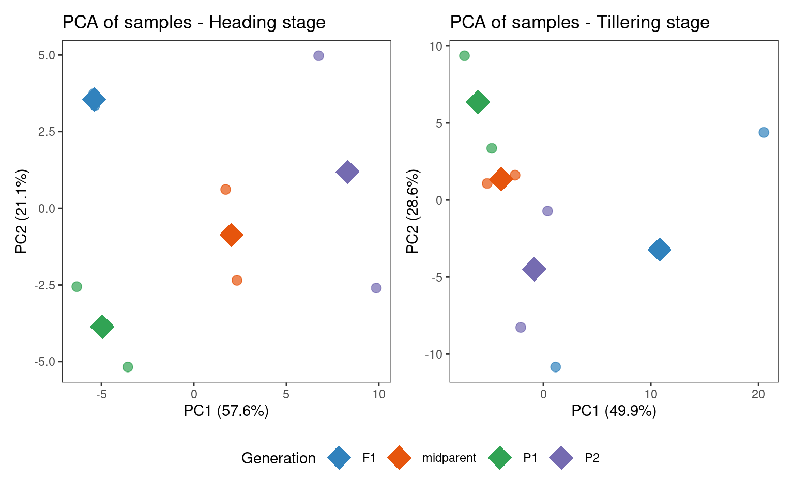
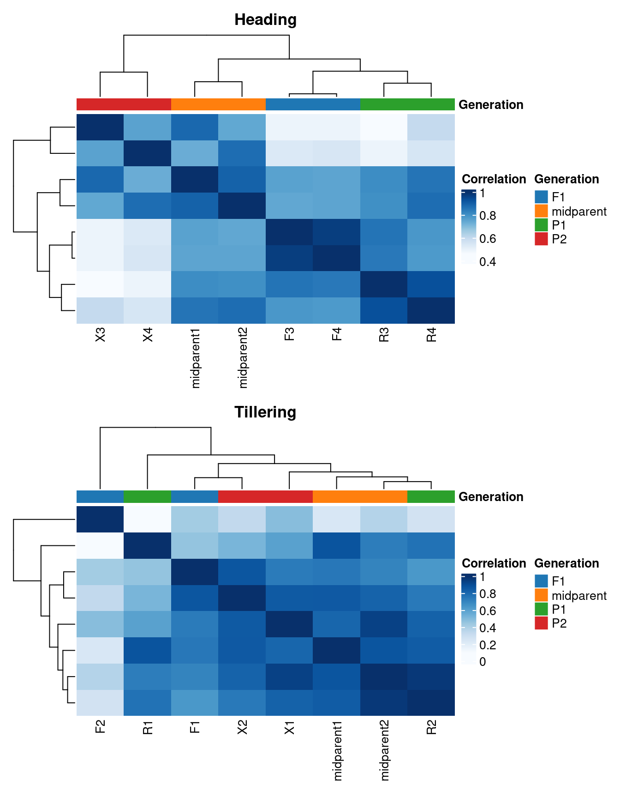
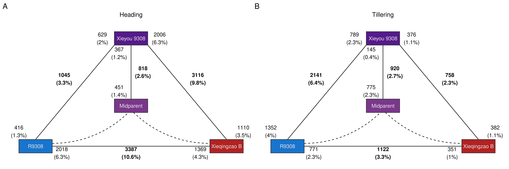
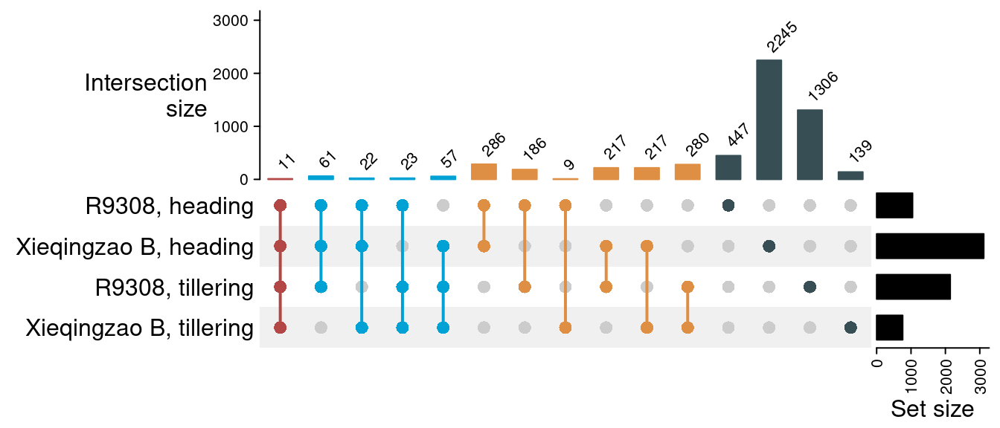
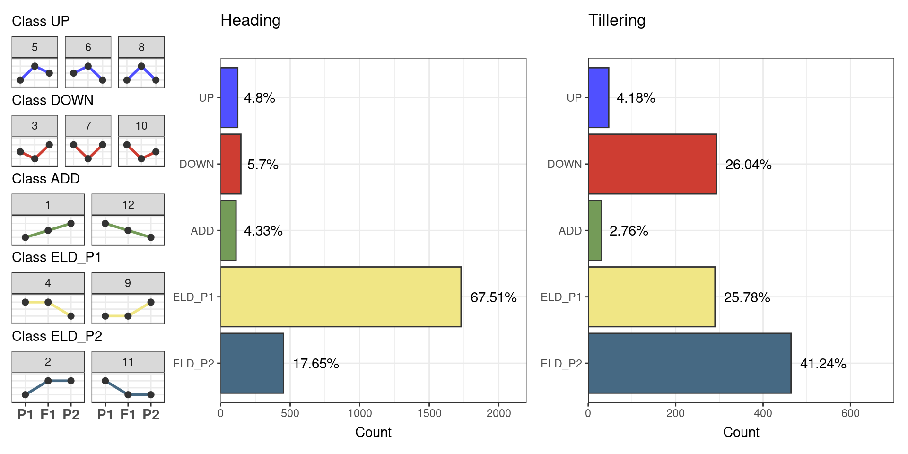

library(here)
library(HybridExpress)
library(SummarizedExperiment)
library(ComplexHeatmap)
library(tidyverse)
library(patchwork)
set.seed(123) # for reproducibility2 Benchmark 2: transcriptomic analyses of heterosis in rice root traits
Here, we will use HybridExpress on data from Zhai et al. (2013). In this study, authors sequenced the transcriptomes of the super-hybrid rice variety Xieyou 9308 and its parents at tillering and heading stages to understand the molecular basis of heterosis (i.e., superior performance of hybrids compared to parents) in root traits.
2.1 Data description and experimental design
We will start by loading the data set, which is stored in a SummarizedExperiment object with a count matrix and sample metadata.
# Load the data
load(here("data", "se_rice.rda"))
se_riceclass: SummarizedExperiment
dim: 42081 12
metadata(0):
assays(1): counts
rownames(42081): Os01t0100100-01 Os01t0100200-01 ... Os12t0641500-03
Os12t0641600-01
rowData names(0):
colnames(12): R1 R2 ... F3 F4
colData names(3): Line Stage Generation# Taking a look at the assay
head(assay(se_rice)) R1 R2 R3 R4 X1 X2 X3 X4 F1 F2 F3 F4
Os01t0100100-01 397 685 247 332 372 348 489 414 257 420 225 262
Os01t0100200-01 7 21 14 8 9 2 10 15 3 9 8 12
Os01t0100400-01 90 195 81 54 141 56 114 91 110 345 52 68
Os01t0100500-01 436 571 324 315 418 353 509 516 280 371 289 276
Os01t0100600-01 264 443 191 300 211 249 345 360 215 195 206 162
Os01t0100650-00 12 3 3 2 12 13 39 2 0 2 0 14# Taking a look at the sample metadata
colData(se_rice) |> as.data.frame() Line Stage Generation
R1 R9308 Tillering P1
R2 R9308 Tillering P1
R3 R9308 Heading P1
R4 R9308 Heading P1
X1 Xieqingzao B Tillering P2
X2 Xieqingzao B Tillering P2
X3 Xieqingzao B Heading P2
X4 Xieqingzao B Heading P2
F1 Xieyou 9308 Tillering F1
F2 Xieyou 9308 Tillering F1
F3 Xieyou 9308 Heading F1
F4 Xieyou 9308 Heading F1As we can see in the sample metadata, for each stage (tillering and heading), two replicates were obtained for each generation (parents and hybrid). Line Xieyou 9308 represents the hybrid, while lines R9308 and Xieqingzao B represent the parents 1 and 2, respectively. Given this experimental design, we will perform comparative analyses separately for each stage. Thus, our triplets will be:
- R9308 <-> Xieyou 9308 <-> Xieqingzao B, heading stage
- R9308 <-> Xieyou 9308 <-> Xieqingzao B, tillering
Let’s subset the data accordingly:
# Get triplets for each stage
se_h <- se_rice[, se_rice$Stage == "Heading"]
se_t <- se_rice[, se_rice$Stage == "Tillering"]2.2 Data processing
Here, we will first remove non-expressed genes (sum of counts <10 across all samples). Then, we will add midparent expression values to each set, and normalize count data by library size.
# Remove non-expressed genes
se_h <- se_h[rowSums(assay(se_h)) >= 10, ]
se_t <- se_t[rowSums(assay(se_t)) >= 10, ]
# Add midparent expression
se_h <- add_midparent_expression(se_h)
se_t <- add_midparent_expression(se_t)
# Normalize data by library size
se_h <- add_size_factors(se_h)
se_t <- add_size_factors(se_t)2.3 Exploratory data analyses
Now, we will perform exploratory data analyses to check if samples group together as expected. We will first explore sample clustering with PCA plots.
# Plot PCA for each stage separately
p_pca_h <- pca_plot(se_h, color_by = "Generation", add_mean = TRUE) +
labs(title = "PCA of samples - Heading stage")
p_pca_t <- pca_plot(se_t, color_by = "Generation", add_mean = TRUE) +
labs(title = "PCA of samples - Tillering stage")
# Combine plots
p_pca_combined <- patchwork::wrap_plots(
p_pca_h + theme(legend.position = "bottom", legend.box = "vertical"),
p_pca_t + theme(legend.position = "bottom", legend.box = "vertical"),
nrow = 1
) +
plot_layout(guides = "collect") &
theme(legend.position = "bottom")
p_pca_combined
Now, let’s visualize a heatmap of sample correlations.
# Heatmap of sample correlations
p_hmh <- plot_samplecor(se_h, coldata_cols = "Generation", show_rownames = FALSE)
p_hmh@column_title <- "Heading"
p_hmt <- plot_samplecor(se_t, coldata_cols = "Generation", show_rownames = FALSE)
p_hmt@column_title <- "Tillering"
# Combine plots - one per row
p_hm_combined <- patchwork::wrap_plots(
ggplotify::as.ggplot(p_hmh),
ggplotify::as.ggplot(p_hmt),
nrow = 2
)
p_hm_combined
In the heading stage, samples group very well by line, as demonstrated by both the PCA plot and the heatmap of sample correlations. In the tillering stage, though, there is a lot of within-group variation for the hybrid samples, which is an issue that could probably be mitigated by including more replicates. This is something we need to keep in mind when interpreting results in the following sections.
2.4 Identifying differentially expressed genes in triplets
Here, we will identify differentially expressed genes (DEGs) between pairwise combinations of lines in a triplet in the heading and tillering stages.
# Get DEGs
deg_h <- get_deg_list(se_h, lfcThreshold = 1)
deg_t <- get_deg_list(se_t, lfcThreshold = 1)Next, we will visualize the frequencies of DEGs with an expression triangle.
# Plot expression triangle
p_triangle_h <- get_deg_counts(deg_h) |>
plot_expression_triangle(
box_labels = c("R9308", "Xieqingzao B", "Xieyou 9308", "Midparent")
) +
labs(title = "Heading") +
theme(plot.title = element_text(hjust = 0.5))
p_triangle_t <- get_deg_counts(deg_t) |>
plot_expression_triangle(
box_labels = c("R9308", "Xieqingzao B", "Xieyou 9308", "Midparent")
) +
labs(title = "Tillering") +
theme(plot.title = element_text(hjust = 0.5))
# Combine plots
p_triangle_all <- wrap_plots(
p_triangle_h,
p_triangle_t,
nrow = 1
) +
plot_annotation(tag_levels = "A") &
theme(plot.tag = element_text(size = 16))
p_triangle_all
The triangle plot shows a clear imbalance in the number of DEGs in the hybrid relative both parents, with much more DEGs relative to the Xieqingzao B line in the heading stage, and much more DEGs relative to the R9308 line in the tillering stage. This results suggest a developmental stage-mediated shift in expression-level dominance, with a bias towards parent R9308 in the heading stage, and a bias towards parent Xieqingzao B in the tillering stage. However, considering the large within-group variance for hybrid samples in the tillering stage, it is not clear whether such shift bias is due to true biological differences or an artifact resulting from such large variances.
Next, to better understand the differences and similarities between stages, we will explore the overlap of DEGs between stages.
# Create a list of DEGs for each contrast and create a combination matrix
deg_sets <- list(
`R9308, heading` = rownames(deg_h$F1_vs_P1),
`Xieqingzao B, heading` = rownames(deg_h$F1_vs_P2),
`R9308, tillering` = rownames(deg_t$F1_vs_P1),
`Xieqingzao B, tillering` = rownames(deg_t$F1_vs_P2)
)
m <- ComplexHeatmap::make_comb_mat(deg_sets)
# Plot UpSet
p_upset <- ComplexHeatmap::UpSet(
m,
comb_col = ggsci::pal_jama()(7)[comb_degree(m)],
top_annotation = upset_top_annotation(m, add_numbers = TRUE),
set_order = names(deg_sets)
)
p_upset
The figure shows that, overall, most of the DEGs between the hybrid and parents are parent- and stage-specific (e.g., only differentially expressed relative to R9308 in the heading stage). However, we also observed a large overlap in DEGs relative to both parents in each stage (N = 286 and 280 for the heading and tillering stages, respectively), and a similar but smaller overlap exists for DEGs relative to the same parent in different stages (N = 186 and 217 for lines R9308 and Xieqingziao B, respectively).
2.5 Classifying genes into expression groups
To understand the expression patterns of hybrids relative to their progenitors, we will classify genes onto expression-based categories and classes as in Rapp, Udall, and Wendel (2009).
# Classify genes in expression partitions (classes and categories)
partition_h <- expression_partitioning(deg_h)
partition_t <- expression_partitioning(deg_t)Now, let’s visualize results:
# Get frequency of genes per class
p_pfreq_h <- plot_partition_frequencies(partition_h, group_by = "Class")
p_pfreq_t <- plot_partition_frequencies(partition_t, group_by = "Class")
# Combine plots
p_freq_combined <- wrap_plots(
p_pfreq_h[[1]],
p_pfreq_h[[2]] + labs(subtitle = "Heading", x = NULL),
p_pfreq_t[[2]] + labs(subtitle = "Tillering", x = NULL),
nrow = 1,
widths = c(1, 2, 2)
)
p_freq_combined
The figure shows that most genes (67.51%) display expression-level dominance (ELD) towards parent 1 (R9308 line) in the heading stage, which is in line with what we observed in the expression triangle plot. However, in the tillering stage, most genes (41.24%) display ELD towards parent 2 (Xieqingzao B), but large fractions of the genes also display ELD towards parent 1 (25.78%) and transgressive down-regulation (26.04%), again suggesting a dramatic shift in expression patterns in temporal scale.
2.6 Overrepresentation analyses
Now, we will perform overrepresentation analyses of GO terms among genes in each expression class in each stage.
# Load GO annotation
load(here("data", "rice_functions.rda"))
rice_functions <- lapply(rice_functions, as.data.frame)
# Perform ORA
## Heading
genes_h <- split(partition_h$Gene, partition_h$Class)
ora_h <- lapply(
genes_h, ora,
annotation = bind_rows(rice_functions),
background = rownames(se_h),
min_setsize = 2, max_setsize = 1000
)
## Tillering
genes_t <- split(partition_t$Gene, partition_t$Class)
ora_t <- lapply(
genes_t, ora,
annotation = bind_rows(rice_functions),
background = rownames(se_t),
min_setsize = 2, max_setsize = 1000
)
# Combining results
rice_enrichment_all <- bind_rows(
bind_rows(ora_h, .id = "Class") |> mutate(group = "Heading"),
bind_rows(ora_t, .id = "Class") |> mutate(group = "Tillering")
) |>
dplyr::select(class = Class, group, term, genes, all, padj)
# Show results as an interactive table
DT::datatable(
rice_enrichment_all,
selection = "single",
rownames = FALSE,
options = list(
lengthMenu = c(5, 10, 25, 50),
pageLength = 10
)
) |>
DT::formatSignif(columns = "padj", digits = 3)In summary, this is what we found for each class:
ADD: a single term (ADP binding) at heading stage.
DOWN: flavone biosynthesis, glutathione S-transferase, MYB transcription factors, CASP-like protein 1U at heading stage. At tillering stage, the only term was CASP-like protein 1U.
UP: at the heading stage, genes were associated with cell wall organization, COBRA, early nodulins, response to anoxia, and beta-glucan biosynthesis. No terms were found at the tillering stage.
ELD_P1: at the heading stage, genes were associated with aquaporins, and diacylglycerol kinases. No terms were found at the tillering stage.
ELD_P2: at the heading and tillering stages, genes were associated with photosynthesis. There were also tillering stage-specific terms, including apoptose-activating factors, gibberellin biosynthesis, terpene synthases, and isoprenoid biosynthesis.
Saving important objects
Lastly, we will save important objects to files, so that they can be reused later.
# Plots
p_freq_combined_b2 <- p_freq_combined
save(
p_freq_combined_b2, compress = "xz",
file = here("products", "plots", "p_freq_combined_b2.rda")
)
p_upset_b2 <- p_upset
save(
p_upset_b2, compress = "xz",
file = here("products", "plots", "p_upset_b2.rda")
)
p_pca_b2 <- p_pca_combined
save(
p_pca_b2, compress = "xz",
file = here("products", "plots", "p_pca_b2.rda")
)
p_triangle_b2 <- p_triangle_all
save(
p_triangle_b2, compress = "xz",
file = here("products", "plots", "p_triangle_b2.rda")
)
# Objects
partition_tables_b2 <- list(
Heading = partition_h,
Tillering = partition_t
)
save(
partition_tables_b2, compress = "xz",
file = here("products", "result_files", "partition_tables_b2.rda")
)
save(
rice_enrichment_all, compress = "xz",
file = here("products", "result_files", "rice_enrichment_all.rda")
)Session info
This document was created under the following conditions:
─ Session info ───────────────────────────────────────────────────────────────
setting value
version R version 4.3.2 (2023-10-31)
os Ubuntu 22.04.3 LTS
system x86_64, linux-gnu
ui X11
language (EN)
collate en_US.UTF-8
ctype en_US.UTF-8
tz Europe/Brussels
date 2024-03-28
pandoc 3.1.1 @ /usr/lib/rstudio/resources/app/bin/quarto/bin/tools/ (via rmarkdown)
─ Packages ───────────────────────────────────────────────────────────────────
package * version date (UTC) lib source
abind 1.4-5 2016-07-21 [1] CRAN (R 4.3.2)
Biobase * 2.62.0 2023-10-24 [1] Bioconductor
BiocGenerics * 0.48.1 2023-11-01 [1] Bioconductor
BiocParallel 1.37.0 2024-01-19 [1] Github (Bioconductor/BiocParallel@79a1b2d)
bitops 1.0-7 2021-04-24 [1] CRAN (R 4.3.2)
bslib 0.6.1 2023-11-28 [1] CRAN (R 4.3.2)
cachem 1.0.8 2023-05-01 [1] CRAN (R 4.3.2)
Cairo 1.6-2 2023-11-28 [1] CRAN (R 4.3.2)
circlize 0.4.15 2022-05-10 [1] CRAN (R 4.3.2)
cli 3.6.2 2023-12-11 [1] CRAN (R 4.3.2)
clue 0.3-65 2023-09-23 [1] CRAN (R 4.3.2)
cluster 2.1.5 2023-11-27 [4] CRAN (R 4.3.2)
codetools 0.2-19 2023-02-01 [4] CRAN (R 4.2.2)
colorspace 2.1-0 2023-01-23 [1] CRAN (R 4.3.2)
ComplexHeatmap * 2.18.0 2023-10-24 [1] Bioconductor
crayon 1.5.2 2022-09-29 [1] CRAN (R 4.3.2)
crosstalk 1.2.1 2023-11-23 [1] CRAN (R 4.3.2)
DelayedArray 0.28.0 2023-10-24 [1] Bioconductor
DESeq2 1.42.0 2023-10-24 [1] Bioconductor
digest 0.6.34 2024-01-11 [1] CRAN (R 4.3.2)
doParallel 1.0.17 2022-02-07 [1] CRAN (R 4.3.2)
dplyr * 1.1.4 2023-11-17 [1] CRAN (R 4.3.2)
DT 0.31 2023-12-09 [1] CRAN (R 4.3.2)
ellipsis 0.3.2 2021-04-29 [1] CRAN (R 4.3.2)
evaluate 0.23 2023-11-01 [1] CRAN (R 4.3.2)
fansi 1.0.6 2023-12-08 [1] CRAN (R 4.3.2)
farver 2.1.1 2022-07-06 [1] CRAN (R 4.3.2)
fastmap 1.1.1 2023-02-24 [1] CRAN (R 4.3.2)
forcats * 1.0.0 2023-01-29 [1] CRAN (R 4.3.2)
foreach 1.5.2 2022-02-02 [1] CRAN (R 4.3.2)
fs 1.6.3 2023-07-20 [1] CRAN (R 4.3.2)
generics 0.1.3 2022-07-05 [1] CRAN (R 4.3.2)
GenomeInfoDb * 1.38.6 2024-02-08 [1] Bioconductor 3.18 (R 4.3.2)
GenomeInfoDbData 1.2.11 2023-12-21 [1] Bioconductor
GenomicRanges * 1.54.1 2023-10-29 [1] Bioconductor
GetoptLong 1.0.5 2020-12-15 [1] CRAN (R 4.3.2)
ggplot2 * 3.5.0 2024-02-23 [1] CRAN (R 4.3.2)
ggplotify 0.1.2 2023-08-09 [1] CRAN (R 4.3.2)
ggsci 3.0.0 2023-03-08 [1] CRAN (R 4.3.2)
GlobalOptions 0.1.2 2020-06-10 [1] CRAN (R 4.3.2)
glue 1.7.0 2024-01-09 [1] CRAN (R 4.3.2)
gridGraphics 0.5-1 2020-12-13 [1] CRAN (R 4.3.2)
gtable 0.3.4 2023-08-21 [1] CRAN (R 4.3.2)
here * 1.0.1 2020-12-13 [1] CRAN (R 4.3.2)
hms 1.1.3 2023-03-21 [1] CRAN (R 4.3.2)
htmltools 0.5.7 2023-11-03 [1] CRAN (R 4.3.2)
htmlwidgets 1.6.4 2023-12-06 [1] CRAN (R 4.3.2)
HybridExpress * 0.99.0 2024-02-15 [1] Bioconductor
IRanges * 2.36.0 2023-10-24 [1] Bioconductor
iterators 1.0.14 2022-02-05 [1] CRAN (R 4.3.2)
jquerylib 0.1.4 2021-04-26 [1] CRAN (R 4.3.2)
jsonlite 1.8.8 2023-12-04 [1] CRAN (R 4.3.2)
knitr 1.45 2023-10-30 [1] CRAN (R 4.3.2)
labeling 0.4.3 2023-08-29 [1] CRAN (R 4.3.2)
lattice 0.22-5 2023-10-24 [4] CRAN (R 4.3.1)
lifecycle 1.0.4 2023-11-07 [1] CRAN (R 4.3.2)
locfit 1.5-9.8 2023-06-11 [1] CRAN (R 4.3.2)
lubridate * 1.9.3 2023-09-27 [1] CRAN (R 4.3.2)
magick 2.8.2 2023-12-20 [1] CRAN (R 4.3.2)
magrittr 2.0.3 2022-03-30 [1] CRAN (R 4.3.2)
Matrix 1.6-3 2023-11-14 [4] CRAN (R 4.3.2)
MatrixGenerics * 1.14.0 2023-10-24 [1] Bioconductor
matrixStats * 1.2.0 2023-12-11 [1] CRAN (R 4.3.2)
memoise 2.0.1 2021-11-26 [1] CRAN (R 4.3.2)
munsell 0.5.0 2018-06-12 [1] CRAN (R 4.3.2)
patchwork * 1.2.0 2024-01-08 [1] CRAN (R 4.3.2)
pillar 1.9.0 2023-03-22 [1] CRAN (R 4.3.2)
pkgconfig 2.0.3 2019-09-22 [1] CRAN (R 4.3.2)
png 0.1-8 2022-11-29 [1] CRAN (R 4.3.2)
purrr * 1.0.2 2023-08-10 [1] CRAN (R 4.3.2)
R6 2.5.1 2021-08-19 [1] CRAN (R 4.3.2)
RColorBrewer 1.1-3 2022-04-03 [1] CRAN (R 4.3.2)
Rcpp 1.0.12 2024-01-09 [1] CRAN (R 4.3.2)
RCurl 1.98-1.14 2024-01-09 [1] CRAN (R 4.3.2)
readr * 2.1.5 2024-01-10 [1] CRAN (R 4.3.2)
rjson 0.2.21 2022-01-09 [1] CRAN (R 4.3.2)
rlang 1.1.3 2024-01-10 [1] CRAN (R 4.3.2)
rmarkdown 2.25 2023-09-18 [1] CRAN (R 4.3.2)
rprojroot 2.0.4 2023-11-05 [1] CRAN (R 4.3.2)
rstudioapi 0.15.0 2023-07-07 [1] CRAN (R 4.3.2)
S4Arrays 1.2.0 2023-10-24 [1] Bioconductor
S4Vectors * 0.40.2 2023-11-23 [1] Bioconductor 3.18 (R 4.3.2)
sass 0.4.8 2023-12-06 [1] CRAN (R 4.3.2)
scales 1.3.0 2023-11-28 [1] CRAN (R 4.3.2)
sessioninfo 1.2.2 2021-12-06 [1] CRAN (R 4.3.2)
shape 1.4.6 2021-05-19 [1] CRAN (R 4.3.2)
SparseArray 1.2.4 2024-02-11 [1] Bioconductor 3.18 (R 4.3.2)
stringi 1.8.3 2023-12-11 [1] CRAN (R 4.3.2)
stringr * 1.5.1 2023-11-14 [1] CRAN (R 4.3.2)
SummarizedExperiment * 1.32.0 2023-10-24 [1] Bioconductor
tibble * 3.2.1 2023-03-20 [1] CRAN (R 4.3.2)
tidyr * 1.3.1 2024-01-24 [1] CRAN (R 4.3.2)
tidyselect 1.2.0 2022-10-10 [1] CRAN (R 4.3.2)
tidyverse * 2.0.0 2023-02-22 [1] CRAN (R 4.3.2)
timechange 0.3.0 2024-01-18 [1] CRAN (R 4.3.2)
tzdb 0.4.0 2023-05-12 [1] CRAN (R 4.3.2)
utf8 1.2.4 2023-10-22 [1] CRAN (R 4.3.2)
vctrs 0.6.5 2023-12-01 [1] CRAN (R 4.3.2)
withr 3.0.0 2024-01-16 [1] CRAN (R 4.3.2)
xfun 0.42 2024-02-08 [1] CRAN (R 4.3.2)
XVector 0.42.0 2023-10-24 [1] Bioconductor
yaml 2.3.8 2023-12-11 [1] CRAN (R 4.3.2)
yulab.utils 0.1.4 2024-01-28 [1] CRAN (R 4.3.2)
zlibbioc 1.48.0 2023-10-24 [1] Bioconductor
[1] /home/faalm/R/x86_64-pc-linux-gnu-library/4.3
[2] /usr/local/lib/R/site-library
[3] /usr/lib/R/site-library
[4] /usr/lib/R/library
──────────────────────────────────────────────────────────────────────────────References
Rapp, Ryan A, Joshua A Udall, and Jonathan F Wendel. 2009. “Genomic Expression Dominance in Allopolyploids.” BMC Biology 7 (1): 1–10.
Zhai, Rongrong, Yue Feng, Huimin Wang, Xiaodeng Zhan, Xihong Shen, Weiming Wu, Yingxin Zhang, et al. 2013. “Transcriptome Analysis of Rice Root Heterosis by RNA-Seq.” BMC Genomics 14 (1): 1–14.